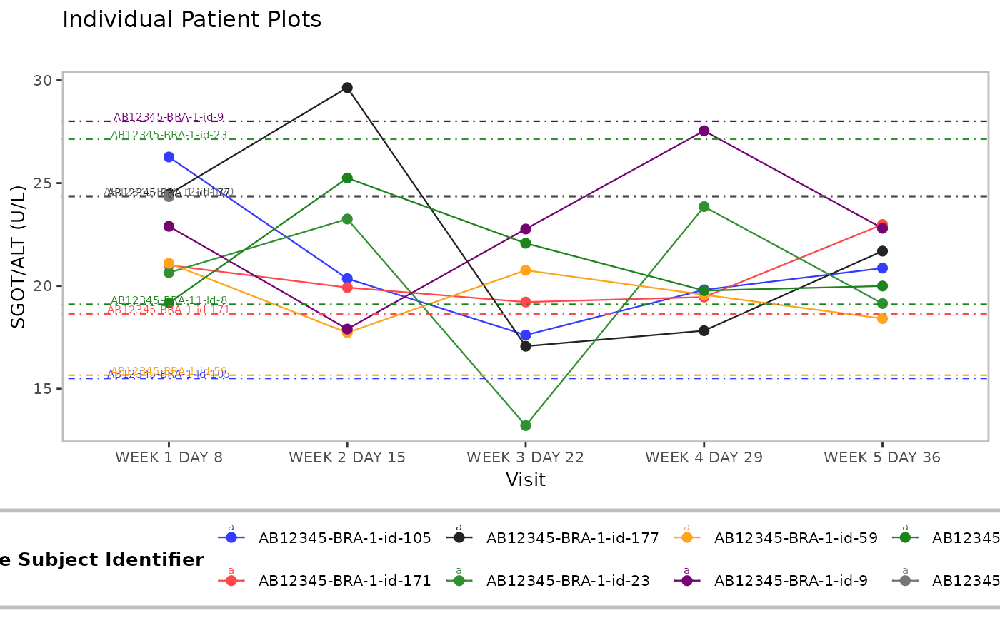

![[Stable]](figures/lifecycle-stable.svg)
Function that generates a simple line plot displaying parameter trends over time.
Usage
h_g_ipp(
df,
xvar,
yvar,
xlab,
ylab,
id_var,
title = "Individual Patient Plots",
subtitle = "",
caption = NULL,
add_baseline_hline = FALSE,
yvar_baseline = "BASE",
ggtheme = nestcolor::theme_nest(),
col = NULL
)Arguments
- df
(
data.frame)
data set containing all analysis variables.- xvar
(
string)
time point variable to be plotted on x-axis.- yvar
(
string)
continuous analysis variable to be plotted on y-axis.- xlab
(
string)
plot label for x-axis.- ylab
(
string)
plot label for y-axis.- id_var
(
string)
variable used as patient identifier.- title
(
string)
title for plot.- subtitle
(
string)
subtitle for plot.- caption
(
string)
optional caption below the plot.- add_baseline_hline
(
flag)
adds horizontal line at baseline y-value on plot whenTRUE.- yvar_baseline
(
string)
variable with baseline values only. Ignored whenadd_baseline_hlineisFALSE.- ggtheme
(
theme)
optional graphical theme function as provided byggplot2to control outlook of plot. Useggplot2::theme()to tweak the display.- col
(
character)
line colors.
See also
g_ipp() which uses this function.
Examples
library(dplyr)
# Select a small sample of data to plot.
adlb <- tern_ex_adlb %>%
filter(PARAMCD == "ALT", !(AVISIT %in% c("SCREENING", "BASELINE"))) %>%
slice(1:36)
p <- h_g_ipp(
df = adlb,
xvar = "AVISIT",
yvar = "AVAL",
xlab = "Visit",
id_var = "USUBJID",
ylab = "SGOT/ALT (U/L)",
add_baseline_hline = TRUE
)
p
